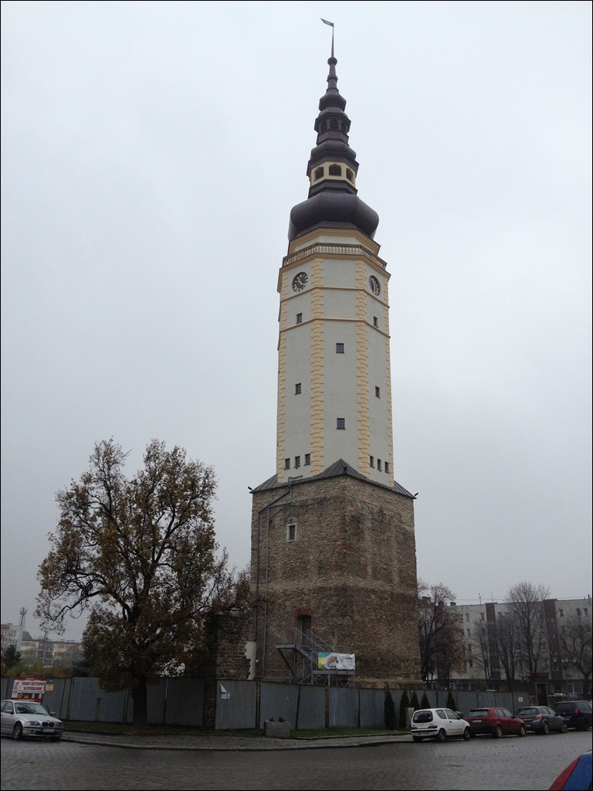

Ratusz
Najstarszy ratusz powsta³ najprawdopodobniej na miejscu domu kupieckiego w pocz±tkach XIV wieku.
Pierwszej przebudowie zosta³ poddany dwa wieki pó¼niej, ale w nied³ugim czasie zosta³ zniszczony przez po¿ar.
Odbudowany w stylu renesansowym w 1564 roku przez kolejne dwa wieki nie ulega³ wiêkszym zmianom.
W 1619 roku spaleniu uleg³a czê¶æ wie¿y ratuszowej, która - wprawdzie odbudowana przez Melchiora Hoffmanna - ale w 1648 roku zawali³a siê uszkadzaj±c budynek.
Kolejny, wiêkszy, po¿ar w 1706 roku ponownie niszczy du¿± czê¶æ ratusza i wie¿ê, która na odbudowê czeka trzyna¶cie lat.
Uderzenie pioruna w 1817 roku jest przyczyn± obni¿enia wie¿y oraz przebudowy ca³ego ratusza.
Zniszczony w wyniku dzia³añ wojennych ratusz i wysadzona wie¿a zosta³y rozebrane.
Pozostawiony jako trwa³a ruina czworoboczny fragment podstawy wie¿y musia³ czekaæ a¿ 60 lat, by "odrodziæ siê" ponownie.
W 2004 roku wie¿ê i piwnice ratusza zabezpieczono przed dalsz± degradacj±, aby po kolejnych 6 latach podj±æ odbudowê wie¿y
przyrwacaj±c miastu ten wyj±tkowy element panoramy Strzelina.